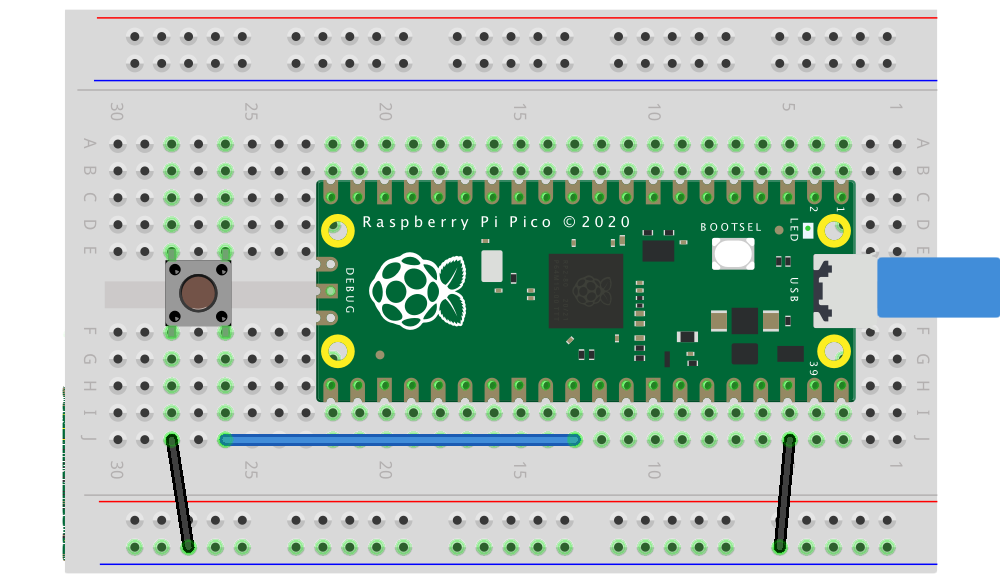

GPIO Control
This tutorial goes from register manipulation to modern abstractions (SDKs, HALs) for controlling GPIO on microcontrollers.
1. What is register-level control?
A register is a small internal memory in the microcontroller, usually 8, 16, or 32 bits wide. Each bit of a register controls or reflects the state of some hardware function: enabling an output, indicating an input, selecting a mode, etc.
When programming at the register level, you read and write directly to the memory addresses where those registers live, without high-level library functions. Peripherals (GPIO, UART, Timers…) expose bit fields for direction, data, pulls, etc.
Many MCUs offer atomic "Write-1-to-Set/Clear/XOR" (SET/CLR/XOR) writes to affect only the indicated bits, avoiding race conditions.
Examples across families:
-
ATmega328P (Arduino Uno):
-
DDRB→ data direction (input/output) PORTB→ output valuesPINB→ input reads-
RP2350 (Pico 2):
-
sio_hw->gpio_oe→ configuring pins as outputs sio_hw->gpio_out→ output valuessio_hw->gpio_in→ input reads
The underlying idea is the same everywhere: reading and writing bits in registers.
2. GPIO from the inside

Key ideas:
- "IOMUX/AF": selects the pin's function (GPIO, UART, SPI…).
- "DIR/OE": enables the pin's output driver.
- "OUT/DATA": sets the logic level.
- "IN": reads the pin's state.
- "PULL-UP/DOWN": internal resistors to define the level when configured as input.
3. Numeric representation
| Expression | Binary | Hex | Decimal |
|---|---|---|---|
1u << 0 |
0b00000001 |
0x01 |
1 |
1u << 2 |
0b00000100 |
0x04 |
4 |
1u << 5 |
0b00100000 |
0x20 |
32 |
1u << 7 |
0b10000000 |
0x80 |
128 |
Note
Why use shifts (<<): it's a compact way to "set bit n to 1" without writing long binary/hex literals. You can use binary, hex, or decimal interchangeably (they are equivalent).
4. Bitwise operators in C
Bitwise operators are used to manipulate registers:
| Operator | Use | Example | Explanation | |
|---|---|---|---|---|
| (OR) |
Set bits to 1 | reg |= (1u << n); |
Forces bit n to 1 without affecting other bits at 0 | |
& (AND) |
Keep certain bits | reg &= mask; |
Keeps 1 only where mask has 1 |
|
~ (NOT) |
Invert bits | ~(1u << n) |
Mask with all 1s except bit n | |
^ (XOR) |
Toggle | reg ^= (1u << n); |
Flips bit n between 0↔1 | |
<<, >> (shift) |
Shift | (1u << 5) |
Produces a value with bit 5 set to 1 |
Examples per operator
AND &:
0b11001010 & 0b11110000 = 0b11000000
0x5A & 0x0F = 0x0A (90 & 15 = 10)
OR |:
0b01010000 | 0b00000110 = 0b01010110
0x20 | 0x04 = 0x24
XOR ^:
0b00001111 ^ 0b00000101 = 0b00001010
0xAA ^ 0xFF = 0x55
NOT ~:
~0b00001111 = 0b11110000 (in 8 bits)
~0x00 = 0xFF
Shifts:
1u << 2 = 0b00000100 = 0x04
0b10000000 >> 3 = 0b00010000 = 0x10
5. The SIO (Single-Cycle I/O) block on the RP2350
SIO is the RP2350's unit for fast GPIO access. It provides direct read/write registers with atomic bitwise operations.
Main SIO registers
gpio_oe→ direction state (1 = output, 0 = input)gpio_oe_set→ sets bits to 1 (output)gpio_oe_clr→ sets bits to 0 (input)gpio_oe_togl→ toggles bits (input ↔ output)gpio_out→ current output stategpio_set→ drives pins high (1), atomic multi-pingpio_clr→ drives pins low (0), atomic multi-pingpio_togl→ toggles pins, atomic multi-pingpio_in→ input reads
Each bit corresponds to one GPIO (bit 2 controls GPIO2, etc.).
From registers to SDKs and HALs (command catalog)
Pico SDK (C, control/portability balance)
- Initialization:
gpio_init(pin),gpio_init_mask(mask) - Direction:
gpio_set_dir(pin, bool),gpio_set_dir_out_masked(mask),gpio_set_dir_in_masked(mask) - Per-pin writes:
gpio_put(pin, 0/1) - Atomic multi-pin writes:
gpio_set_mask(mask),gpio_clr_mask(mask),gpio_xor_mask(mask),gpio_put_masked(mask, value) - Reads and pulls:
gpio_get(pin),gpio_pull_up(pin),gpio_pull_down(pin),gpio_disable_pulls(pin)
Arduino (very portable, higher level)
- Direction:
pinMode(pin, INPUT/OUTPUT/INPUT_PULLUP/INPUT_PULLDOWN) - Digital I/O:
digitalWrite(pin, HIGH/LOW), digitalRead(pin)
MicroPython/CircuitPython (rapid prototyping)
from machine import PinPin(n, Pin.OUT/Pin.IN, pull=Pin.PULL_UP/PULL_DOWN)p.on(),p.off(),p.value()
6. First Blink code
#include "pico/stdlib.h"
#include "hardware/structs/sio.h"
int main() {
const uint32_t bit = 1u << PICO_DEFAULT_LED_PIN;
gpio_init(PICO_DEFAULT_LED_PIN); // sets SIO function and enables I/O
sio_hw->gpio_oe_set = bit; // output (OE=1), atomic
while (true) {
sio_hw->gpio_set = bit; // high (uses the SDK field)
sleep_ms(500);
sio_hw->gpio_clr = bit; // low
sleep_ms(500);
}
}
// File: sdk_blink.c
#include "pico/stdlib.h"
#include "hardware/gpio.h"
int main() {
// stdio_init_all(); // OPTIONAL: only for printf
gpio_init(PICO_DEFAULT_LED_PIN); // routes the pin to GPIO/SIO
gpio_set_dir(PICO_DEFAULT_LED_PIN, true); // output
while (true) {
gpio_put(PICO_DEFAULT_LED_PIN, 1); // ON
sleep_ms(500);
gpio_put(PICO_DEFAULT_LED_PIN, 0); // OFF
sleep_ms(500);
}
}
#include "pico/stdlib.h"
#include "hardware/structs/sio.h"
int main() {
const uint32_t bit = 1u << PICO_DEFAULT_LED_PIN;
gpio_init(PICO_DEFAULT_LED_PIN); // ensures SIO function
sio_hw->gpio_oe_set = bit; // output
while (true) {
sio_hw->gpio_togl = bit; // atomic toggle (not gpio_out_xor)
sleep_ms(500);
}
}
#include "pico/stdlib.h"
#include "hardware/gpio.h"
int main() {
gpio_init(PICO_DEFAULT_LED_PIN);
gpio_set_dir(PICO_DEFAULT_LED_PIN, true);
const uint32_t bit = (1u << PICO_DEFAULT_LED_PIN);
while (true) {
gpio_xor_mask(bit); // toggle ONLY that pin
sleep_ms(500);
}
}
7. Masks
A mask is a bit pattern used to select, modify, or check specific bits within a register or a data set. Masks are commonly used in bit-manipulation operations, such as configuring GPIO pins, where a mask lets you affect only a subset of pins instead of all of them.
... 0000 0000 0000 0000 0000 0101 0100
^ ^ ^
| | └─ selects GPIO 2
| └─── selects GPIO 4
└───── selects GPIO 6
MASK = (1u<<2) | (1u<<4) | (1u<<6), then a single write to the SIO SET/CLR/XOR registers can turn on, turn off, or toggle all those pins at once.
Building masks
- A single pin:
1u << PIN - Several pins:
((1u << PIN1) | (1u << PIN2) | (1u << PIN3)) - Contiguous range ("bus"):
MASK_N_BITS = ((1u << N) - 1u) << SHIFT- for 3 bits on GPIO 10..12 ->MASK = ((1u << 3) - 1u) << 10
Applied mask examples
#include "pico/stdlib.h"
#include "hardware/structs/sio.h"
#define PIN_A 2
#define PIN_B 4
#define PIN_C 6
int main() {
// 1) Mask with several pins
const uint32_t MASK = (1u<<PIN_A) | (1u<<PIN_B) | (1u<<PIN_C);
// 2) Ensure SIO function on each pin (needed only once)
gpio_init(PIN_A);
gpio_init(PIN_B);
gpio_init(PIN_C);
// 3) Direction: output (OE=1) for ALL pins with ONE single instruction
sio_hw->gpio_oe_set = MASK;
while (true) {
// 4) SET: drives ALL mask pins high in a single operation
sio_hw->gpio_set = MASK;
sleep_ms(500);
// 5) CLR: drives ALL mask pins low in a single operation
sio_hw->gpio_clr = MASK;
sleep_ms(500);
// 6) TOGL (XOR): toggles ALL mask pins in a single operation
sio_hw->gpio_togl = MASK;
sleep_ms(500);
}
}
In the SDK the typical commands are:
gpio_set_mask(MASK);→ drives the MASK pins highgpio_clr_mask(MASK);→ drives the MASK pins lowgpio_xor_mask(MASK);→ toggles the MASK pinsgpio_put_masked(MASK, VALUE);→ drives the MASK pins high/low according to VALUE
Example
#include "pico/stdlib.h"
#include "hardware/gpio.h"
#define PIN_A 2
#define PIN_B 4
#define PIN_C 6
int main() {
// 1) Mask with several pins
const uint32_t MASK = (1u<<2) | (1u<<4) | (1u<<6);
// 2) Ensure SIO function on each pin (needed only once)
gpio_init(2);
gpio_init(4);
gpio_init(6);
// 3) Direction: output (OE=1) for ALL pins with ONE single instruction
gpio_set_dir_out_masked(MASK);
while (true) {
gpio_set_mask(MASK); // high on 2,4,6
sleep_ms(200);
gpio_clr_mask(MASK); // low on 2,4,6
sleep_ms(200);
gpio_xor_mask(MASK); // toggle on 2,4,6
}
}
#include "pico/stdlib.h"
#include "hardware/gpio.h"
#define A 0
#define B 1
#define C 2
int main() {
const uint32_t MASK = (1u<<A) | (1u<<B) | (1u<<C);
const uint32_t PATTERN = (1u<<C) | (1u<<A);
gpio_init_mask(MASK);
gpio_put_masked(MASK, PATTERN);
gpio_set_dir_masked(MASK, MASK);
while (true) {
sleep_ms(500);
gpio_xor_mask(MASK);
}
}
#include "pico/stdlib.h"
#include "hardware/gpio.h"
#define A 0
#define B 1
#define C 2
int main() {
const uint32_t MASK = (1u<<0) | (1u<<1) | (1u<<2);
gpio_init(0); gpio_init(1); gpio_init(2);
sio_hw->gpio_oe_set = MASK; // outputs
sio_hw->gpio_clr = MASK; // clear first
sio_hw->gpio_set = (1u<<2) | (1u<<0); // load 101
while (true) {
sleep_ms(500);
sio_hw->gpio_togl = MASK;
}
}
8. Reference
Pico 2 Pinout

Reset wiring

ATOMIC single-cycle
Required to use it
`#include "hardware/structs/sio.h"`
First connect each pin to SIO with `gpio_init(pin);`
| Purpose | Register / Field | What it does |
|---|---|---|
| Read inputs (all) | sio_hw->gpio_in |
Reads levels of all GPIOs; mask to keep the ones you care about. |
| Output: SET | sio_hw->gpio_set = mask; |
Drives the mask pins high (atomic). |
| Output: CLR | sio_hw->gpio_clr = mask; |
Drives the mask pins low (atomic). |
| Output: TOGGLE | sio_hw->gpio_togl = mask; |
Toggles the mask pins (atomic XOR). |
| Output: direct write | sio_hw->gpio_out = value; |
Overwrites the whole output register (not atomic). |
| Direction: OUT | sio_hw->gpio_oe_set = mask; |
Switches the mask pins to output (atomic). |
| Direction: IN | sio_hw->gpio_oe_clr = mask; |
Switches the mask pins to input (atomic). |
| Direction: toggle | sio_hw->gpio_oe_togl = mask; |
Toggles IN/OUT (atomic). |
SDK - high level
Required to use it
`#include "hardware/gpio.h"`
First connect each pin to SIO with `gpio_init(pin);`
| Purpose | Call | What it does |
|---|---|---|
| Route to SIO | gpio_init(pin); |
Selects GPIO_FUNC_SIO and enables the input buffer. |
| Init several pins | gpio_init_mask(mask); |
Same, but for multiple pins. |
| Enable input | gpio_set_input_enabled(pin, en); |
Controls the input buffer. |
| Set direction (one) | gpio_set_dir(pin, out); |
true=output, false=input. |
| Masked direction | gpio_set_dir_masked(mask, value); |
In mask: 1→output, 0→input. |
| All output | gpio_set_dir_out_masked(mask); |
Switches the mask pins to output. |
| All input | gpio_set_dir_in_masked(mask); |
Switches the mask pins to input. |
| Write one pin | gpio_put(pin, value); |
High/Low on one pin. |
| Write masked pattern | gpio_put_masked(mask, value); |
Updates only the mask bits. |
| SET on mask | gpio_set_mask(mask); |
Drives all mask bits high. |
| CLR on mask | gpio_clr_mask(mask); |
Drives all mask bits low. |
| TOGGLE on mask | gpio_xor_mask(mask); |
Toggles all mask bits. |